Krok po kroku pokazujemy, jak wygląda praca z APM — od dodania pierwszego dyżuru, aż po funkcje, z których korzystasz na co dzień.
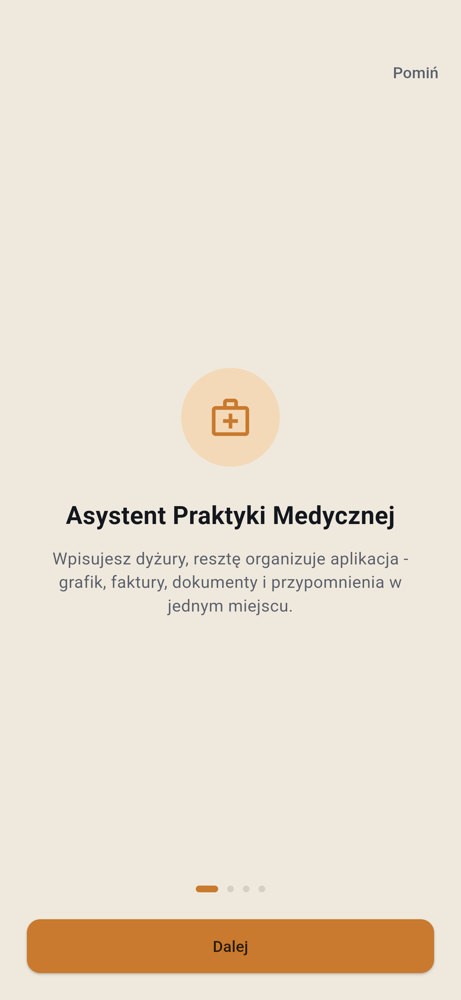
Po pierwszym uruchomieniu krótki, czterostronicowy przewodnik pokazuje, co apka potrafi — grafik dyżurów, urlopy, faktury z KSeF i przypomnienia w jednym miejscu. Można go pominąć w każdej chwili.
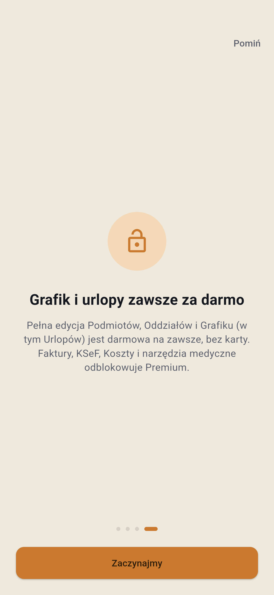
Pełna edycja Grafiku, Podmiotów i Oddziałów (w tym Urlopów) jest darmowa na zawsze, bez karty płatniczej. Faktury, KSeF, Koszty i narzędzia medyczne odblokowuje subskrypcja Premium — zero niespodzianek.
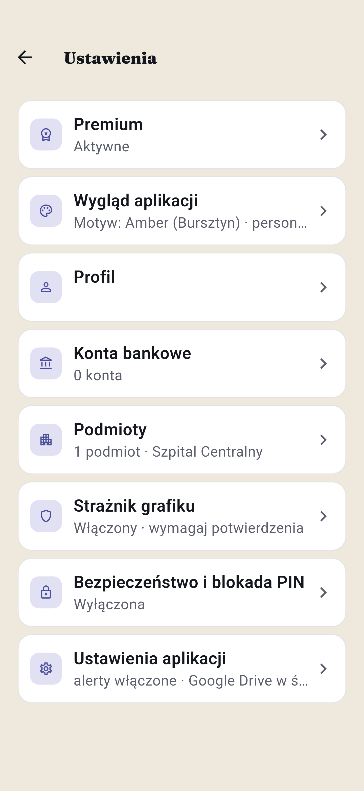
Ustawienia to punkt startowy: stąd dodajesz swoje Podmioty, uzupełniasz Profil, włączasz Strażnika grafiku i blokadę PIN. Wszystko widoczne na pierwszy rzut oka, bez szukania po zakładkach.
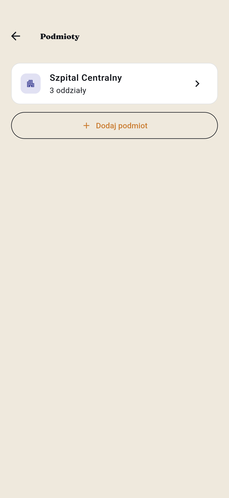
Szpital, przychodnia, POZ — każdy pracodawca to osobny Podmiot, a w środku dowolna liczba Oddziałów. Jeden ekran pokazuje wszystkie miejsca, w których pracujesz.
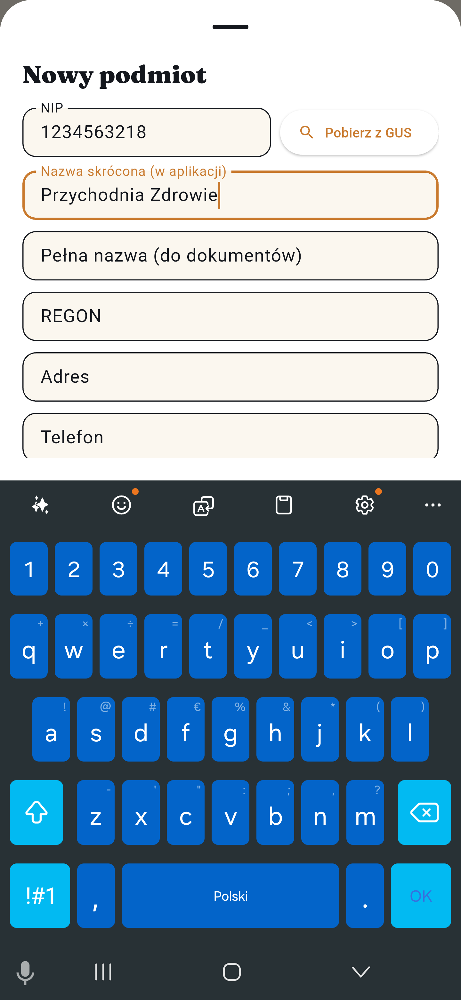
NIP, nazwa, adres — możesz pobrać dane automatycznie z GUS albo wpisać ręcznie. Każdy Podmiot może mieć wiele Oddziałów, jeśli pracujesz w kilku miejscach jednocześnie.
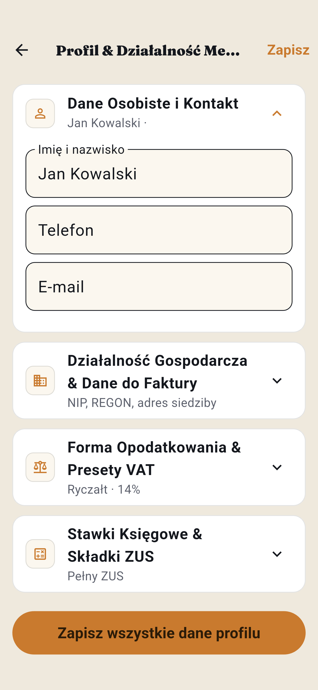
Dane osobowe i kontaktowe, forma opodatkowania, stawki ZUS — uzupełniasz raz, a APM korzysta z nich automatycznie przy każdej fakturze i rozliczeniu.
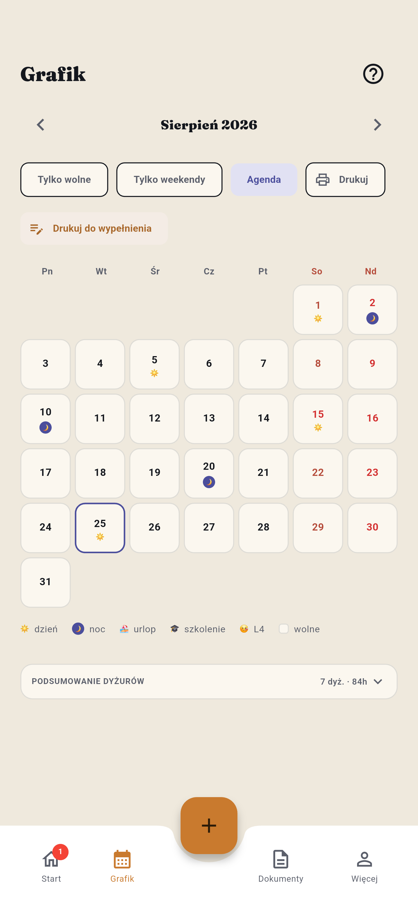
Konfiguracja gotowa raz na zawsze. Od tego momentu wystarczy na bieżąco wpisywać dyżury w Grafiku — reszta (podsumowania, faktury, przypomnienia) dzieje się automatycznie.
Konfiguracja to jednorazowy krok. Na co dzień korzystasz z tego, co poniżej.
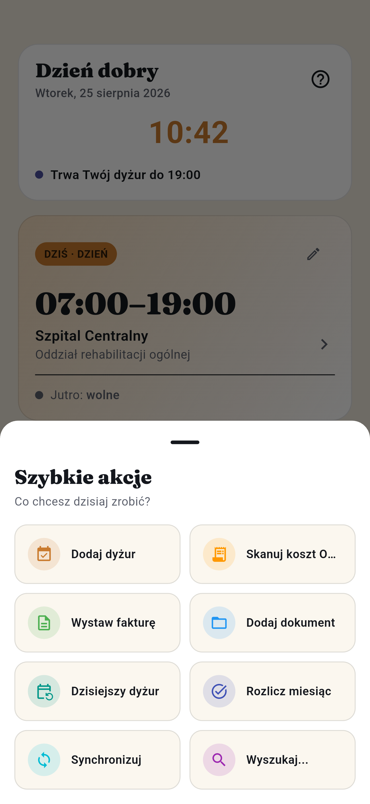
Duży przycisk "+" na dole ekranu — dodanie dyżuru, wystawienie faktury, skan kosztu z paragonu (OCR) czy rozliczenie miesiąca zawsze o jedno stuknięcie od Ciebie.
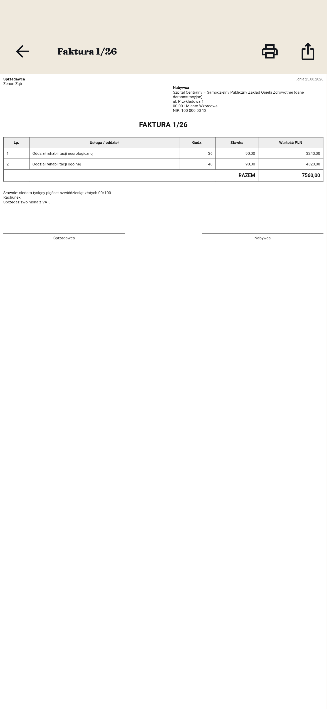
Wystawiasz fakturę jednym kliknięciem prosto z Grafiku, z integracją Krajowego Systemu e-Faktur (KSeF 2.0).
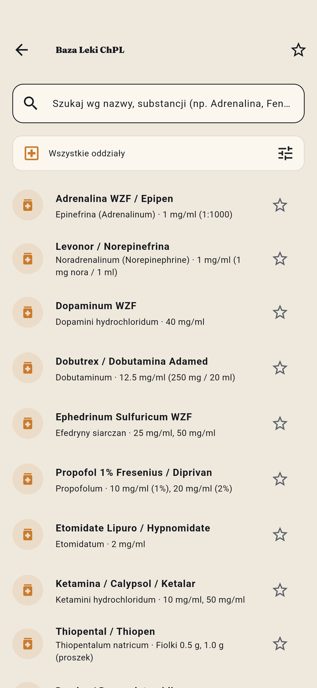
Stężenia, rozcieńczanie i przelicznik mg/ml/µg dla leków ratunkowych — pod ręką, offline, bez szukania w internecie.
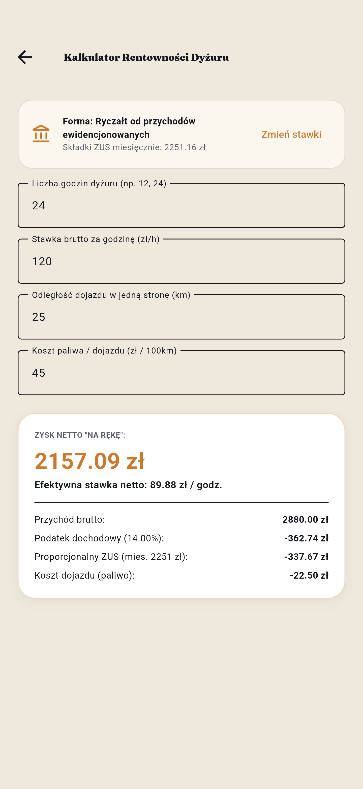
Wpisujesz stawkę i godziny — dostajesz realny zysk netto "na rękę", po odjęciu ZUS, podatku i kosztów dojazdu.
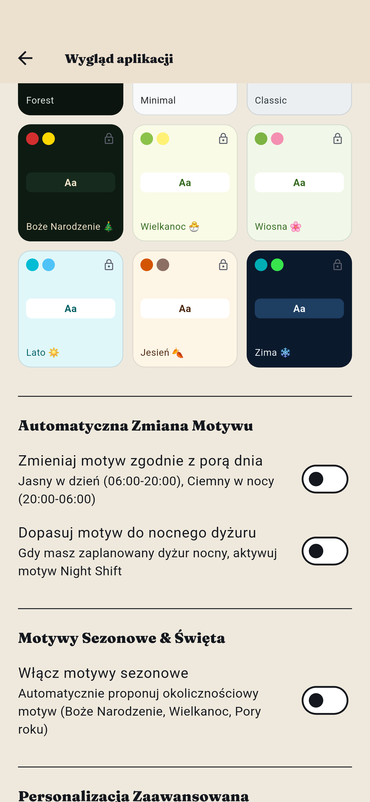
Kilkanaście motywów kolorystycznych, w tym sezonowe i Night Shift dla dyżurów nocnych — apka dopasowuje się do Ciebie.
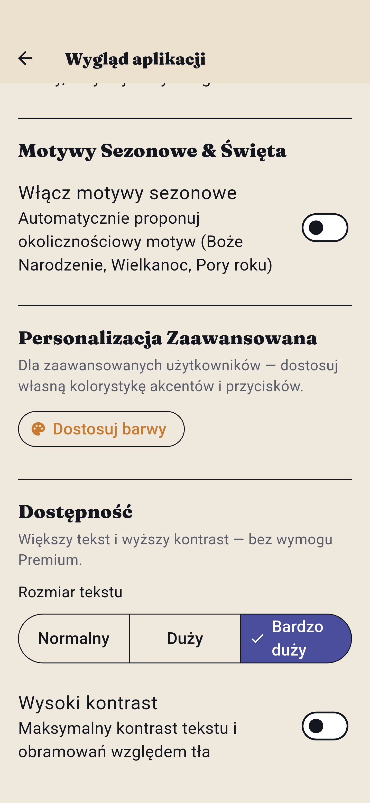
Większy rozmiar tekstu i wysoki kontrast — bez wymogu Premium, bo czytelność to nie luksus, tylko podstawa.
Pobierz aplikację i zacznij organizować swoje dyżury, urlopy i faktury już dziś.
Pobierz z Google Play →